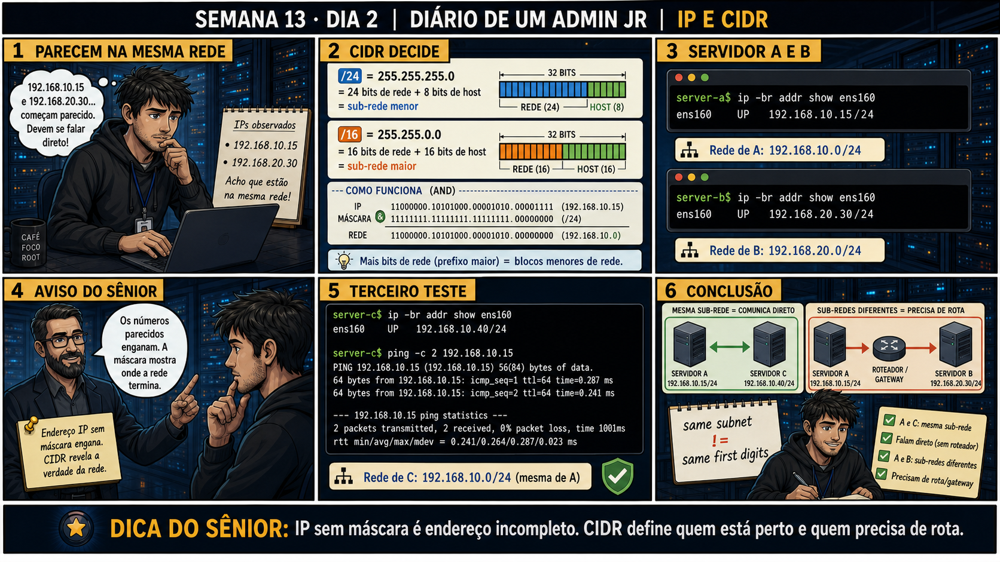

Semana passada, outro ticket
Um estagiário migrou um servidor de aplicação pra uma VLAN nova e configurou o IP como
172.16.10.40/24 — "parecido" com o gateway 172.16.10.1 que ele viu anotado num post-it, então achou que
tava certo. O servidor nunca conseguiu falar com o banco de dados em 172.16.20.15, e ele passou a tarde
inteira reiniciando serviços achando que era firewall. Eu perguntei uma coisa só: "qual é o endereço de
rede dos dois, calculado com a máscara?" Ele nunca tinha calculado — só olhado os números e achado
parecido. 172.16.10.0/24 e 172.16.20.0/24: redes diferentes, sem rota configurada entre elas.
O ponto que fica: "os números parecem próximos" não é evidência de rede — é a mesma armadilha de olhar
hostname parecido e assumir que é o mesmo servidor. Só o cálculo com a máscara (ou o ping, como segunda
confirmação) prova onde a rede realmente termina.
Semana 13 · Dia 2 | Nível Júnior — Redes
IP e CIDR
IP sem máscara é endereço incompleto — CIDR define quem está perto e quem precisa de rota
ANTES DE ALTERAR, OBSERVE. DEPOIS DE ALTERAR, VALIDE.
1. O chamado
#5901
PRIORIDADE MÉDIA
11:30
aberto por: estagiário de infra
host: srv-app-02 e srv-app-03 · serviço: comunicação entre servidores
"192.168.10.15 e 192.168.20.30... começam parecido. Devem se falar direto!"
Essa suposição é a armadilha central de hoje. Os dois IPs realmente estão na mesma rede?
💡 Passa o mouse nas palavras destacadas pra ver uma dica rápida — clica se quiser a explicação completa com analogia.
2. O sênior te conta
3. Decodificador de conceitos
Clica em qualquer termo pra ver a definição completa e uma analogia do dia a dia:
4. Ferramentas e leitura da evidência
| Notação | Máscara | Significado |
|---|---|---|
/24 | 255.255.255.0 | 24 bits de rede + 8 bits de host — sub-rede menor. |
/16 | 255.255.0.0 | 16 bits de rede + 16 bits de host — sub-rede maior. |
server-a$ ip -br addr show ens160 ens160 UP 192.168.10.15/24 → Rede de A: 192.168.10.0/24 server-b$ ip -br addr show ens160 ens160 UP 192.168.20.30/24 → Rede de B: 192.168.20.0/24 --- cálculo AND --- IP 11000000.10101000.00001010.00001111 (192.168.10.15) MÁSCARA 11111111.11111111.11111111.00000000 (/24) REDE 11000000.10101000.00001010.00000000 (192.168.10.0)
5. Laboratório guiado — marca conforme for testando
Segurança: execute os testes apenas em VM descartável e confirme nomes de discos, hosts e arquivos antes de cada comando.
- Ação: configure IPs na mesma sub-rede em duas VMs de laboratório.vm-a$ ip addr add 192.168.10.15/24 dev ens160 vm-b$ ip addr add 192.168.10.40/24 dev ens160 $ ip -br addr
🔍 Detalhar esse comando
- ip addr add
- Adiciona um endereço IP a uma interface de rede — comando de configuração, diferente do
ip addr show(só leitura) usado ontem. - 192.168.10.15/24
- O endereço IP seguido da máscara em notação CIDR — o
/24diz que os primeiros 24 bits identificam a rede, sobrando 8 bits para hosts (256 endereços possíveis, 254 utilizáveis). - dev ens160
- Especifica em qual interface de rede o endereço deve ser adicionado.
Resultado esperado: ambos os IPs visíveis, com o mesmo prefixo /24.Por quê: começar com um caso "mesma rede" confirmado dá uma base pra comparar com o caso "redes diferentes" mais adiante.Cilada comum: confundir IP configurado temporariamente (viaip addr add) com IP persistente — sem editar o arquivo de configuração, isso some no reboot.Se o seu resultado foi diferente
"RTNETLINK answers: File exists" → o IP já está atribuído (de uma tentativa anterior). Remova antes comsudo ip addr del 192.168.10.15/24 dev ens160e adicione de novo.
"Cannot find device \"ens160\"" → confirme o nome real da interface comip -br linkantes de rodar o comando — em VMs diferentes pode sereth0ouenp0s3. - Ação: calcule manualmente o endereço de rede de cada IP usando a máscara /24.# 192.168.10.15 AND 255.255.255.0 = 192.168.10.0 # 192.168.10.40 AND 255.255.255.0 = 192.168.10.0Resultado esperado: ambos resultam em 192.168.10.0/24 — mesma rede.Por quê: o cálculo é a evidência teórica — antes de testar na prática, você já sabe o que esperar.Cilada comum: pular esse passo achando "parece que bate" — é exatamente esse hábito que causa erro de sub-rede em produção.
- Ação: rode ping entre as duas VMs pra confirmar na prática.vm-a$ ping -c 4 192.168.10.40Resultado esperado: 0% de perda de pacotes.Por quê: o ping é a segunda evidência — cálculo teórico batendo com teste prático é o que fecha a confirmação, não um ou outro isolado.Cilada comum: um firewall bloqueando ICMP pode dar falso negativo — se o ping falhar mas o cálculo bateu, verifique regras de firewall antes de assumir que a rede está errada.🧑🏫 Aqui entra o Mentor (em breve): se o cálculo manual e o teste de ping não baterem, este é o ponto onde o chat com o Sênior-IA vai ajudar a revisar a matemática binária.
Se o seu resultado foi diferente
100% de perda de pacotes mesmo com o cálculo batendo em mesma rede → confirme que o firewall de uma das VMs não está bloqueando ICMP comsudo nft list ruleset | grep icmp— ping falho não invalida o cálculo de sub-rede, só mascara o teste. - Ação: reconfigure uma VM para uma sub-rede diferente e recalcule.vm-b$ ip addr add 192.168.20.30/24 dev ens160 # 192.168.20.30 AND 255.255.255.0 = 192.168.20.0Resultado esperado: 192.168.20.0/24 — rede diferente da primeira VM.Por quê: ver o caso "rede diferente" lado a lado com o caso "mesma rede" é o que fixa a diferença — não basta ler a teoria uma vez.Cilada comum: esquecer de remover o IP antigo antes de adicionar o novo — a VM pode ficar com dois IPs simultâneos e mascarar o teste.
- Ação: documente a conclusão comparando os dois casos testados.# caso 1: 192.168.10.15/24 + 192.168.10.40/24 → mesma rede → ping OK # caso 2: 192.168.10.15/24 + 192.168.20.30/24 → redes diferentes → precisa de roteadorResultado esperado: anotação clara distinguindo os dois casos — reproduzindo o painel 6 da prancha de hoje.Por quê: registrar os dois cenários lado a lado é o que você vai consultar da próxima vez que dois IPs "parecerem" da mesma rede.Cilada comum: anotar só a conclusão ("são redes diferentes") sem o cálculo — sem o raciocínio registrado, você vai precisar refazer tudo da próxima vez.
- CENÁRIOAção: Remova os IPs temporários adicionados nas duas VMs —
ip addr addnão é persistente, mas some só no reboot; sem remover, a VM fica com endereços de laboratório penduradas.vm-a$ sudo ip addr del 192.168.10.15/24 dev ens160 vm-b$ sudo ip addr del 192.168.10.40/24 dev ens160 vm-b$ sudo ip addr del 192.168.20.30/24 dev ens160 $ ip -br addrResultado esperado: nenhum dos três IPs de teste aparece mais emip -br addr— cada VM volta a mostrar só o IP original dela.Por que fizemos isso: como esses endereços não foram gravados em nenhum arquivo de configuração, eles só sumiriam no próximo reboot — remover manualmente fecha o laboratório sem depender de reiniciar a VM.Cilada comum: tentar remover um endereço que nunca foi adicionado com sucesso (por causa de um erro anterior) — oip addr delnesse caso retorna erro; confira comip -br addrantes de assumir que sobrou algo.Se o seu resultado foi diferente
"RTNETLINK answers: Cannot assign requested address" → o endereço já não estava mais lá (talvez removido antes, ou nunca foi de fato adicionado) — confirme comip -br addrque a limpeza já está completa.
6. Antes de ver as opções — tenta responder
🧠 Recall ativo: como você determina, com certeza, se dois IPs estão na mesma sub-rede?
Aplique a
máscara (CIDR)
a cada IP com uma operação
AND
— se o resultado (o endereço de rede) for igual pros dois IPs, eles estão na mesma sub-rede. Se for
diferente, mesmo com números parecidos, eles precisam de um roteador pra se falar.
7. Questão comentada — clica numa alternativa
Servidor A tem IP 192.168.10.15/24. Servidor B tem IP 192.168.20.30/24. Eles
conseguem se comunicar diretamente, sem passar por um roteador?
💡 Analogia do Sênior para Fixar: A máscara de sub-rede /24 é como o CEP do bairro: define quais computadores são seus vizinhos de calçada (rede local) e quem está em outra cidade (precisa de gateway).
7.1 Servidor C tem IP 192.168.10.40/24. Você quer confirmar se ele está na mesma rede que o Servidor A (192.168.10.15/24), sem só assumir pelos números
O ping é uma forma de testar isso na prática.
Por que um ping bem-sucedido de A para C, junto com o cálculo de rede batendo,
confirma que estão na mesma sub-rede?
💡 Analogia do Sênior para Fixar: O endereço de Broadcast (.255 em /24) é o megafone da praça: uma mensagem enviada para ele é ouvida por todas as máquinas daquele segmento de rede ao mesmo tempo.
7.2 "Um prefixo /16 tem uma rede MAIOR ou MENOR que um prefixo /24?"
Um colega, vendo o número maior (16 vs 24), acha que /16 é uma rede menor.
Qual é a relação correta entre o tamanho do prefixo e o tamanho da sub-rede?
💡 Analogia do Sênior para Fixar: A notação CIDR (/28, /29) é o loteamento de um terreno grande: fatia um bloco de IPs em condomínios menores para não desperdiçar endereços públicos caros.
8. Procedimento profissional
- Nunca assuma "mesma rede" só porque os primeiros números do IP parecem iguais.
- Sempre calcule o endereço de rede usando a máscara (CIDR) de cada host.
- Compare os endereços de rede resultantes — só assim você sabe se são a mesma sub-rede.
- Valide na prática com ping, quando possível, além do cálculo.
- Se as redes forem diferentes, lembre que a comunicação vai depender de um roteador/gateway.
Prevenção
Antes de configurar qualquer IP novo numa VLAN ou sub-rede diferente, calcule o endereço de
rede primeiro — nunca copie um IP "parecido" com o gateway achando que está certo. Um checklist de duas
linhas (cálculo + ping) evita horas de diagnóstico errado numa VLAN nova.
9. Validação e encerramento
- Nenhuma suposição de "mesma rede" foi feita sem o cálculo com a máscara.
- O endereço de rede foi calculado corretamente para cada host envolvido.
- A comunicação foi testada na prática com ping, confirmando a teoria.
- A diferença entre /24 e /16 foi entendida corretamente (mais bits de rede = sub-rede menor).
Rollback e limites
Os comandos de hoje (ip -br addr, ping) são de leitura/teste, sem risco. O cuidado
real é na interpretação: um erro de cálculo de sub-rede pode levar a diagnósticos errados mais adiante,
então vale sempre confirmar com uma segunda evidência (como o ping) antes de agir com base só no cálculo.
💡 Sobre repetição espaçada: "não confie só na aparência, confirme com
evidência" conecta com a Semana 12 (comparar UUID real via blkid, não confiar de memória) — mesma disciplina
aplicada a IPs. O Anki vai conectar os dois.
10. Resposta final
Alternativa correta: A. Nesta aula, a resposta certa foi não — com
/24, A e B estão em redes diferentes (192.168.10.0/24 e 192.168.20.0/24), precisando de um roteador
entre eles. O ponto central do caso é este: IP sem máscara é endereço incompleto — CIDR define quem está
perto e quem precisa de rota.
🔓 O que você desbloqueou hoje
Capacidade de calcular e comparar sub-redes com confiança, sem cair na
armadilha dos "números parecidos". Amanhã você aprende a diferença entre um ping que responde e uma
aplicação que realmente funciona — e por que "ping OK" nunca é suficiente pra fechar um chamado.